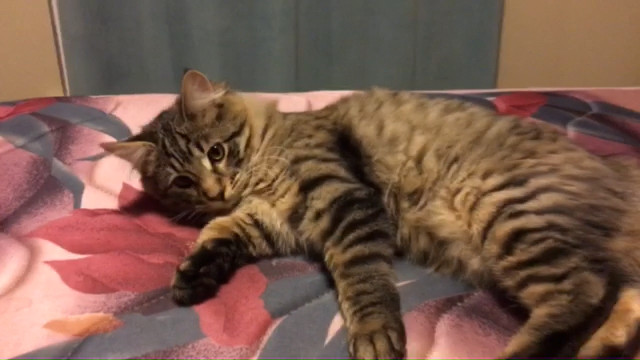

About
This website is dedicated to educate people about cat breeds.
While many may not consider different breeds of cats to be important, breeds can significantly affect the nature of a cat.
Other than breeds only affecting appearance, they can also change the behavior and size of a cat.
Breeds can also change how friendly a cat is towards people, other pets and the kinds of activities the cat will enjoy.
Although there are non-domestic cat breeds this site only focuses on the domestic ones.
Below are images of cats from my family, most of our pet names are celestial.
Castiel

Nova
Moon

Pluto

Celeste